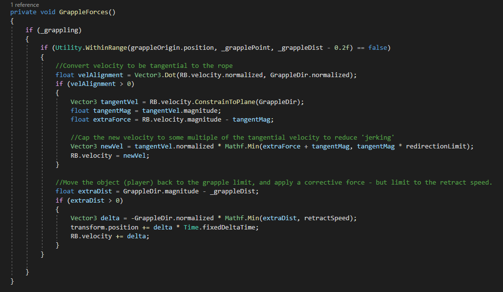

Coding Grappling Hooks
The implementation of a grappling hook depends a lot on what type of game it's going in, and what purpose it serves. This writeup is specifically for a mostly realistic physics based situation, but with some elements smoothed or exaggerated to make the gameplay better. The project I coded this for was the 2024 GMTK game jam, with the theme 'Built to Scale'. The game we made was about grappling up a giant statue, and though a number of complications meant I couldn't contribute much to the content, I think the grappling mechanics turned out very well. Try it out on itch.io here.
Contents:
- Spring implementation
- Physics explanation
- Discrete physics problems
- Common mistakes
- Velocity redirecting
- Correcting gravity leak
- Better redirection
- Final code
Spring implementation (not smooth enough):
The first results for grappling hooks on google are videos using the spring joint, by setting its connected anchor to the result of a raycast. This does work, and if the values are adjusted it can feel ok, but it is really hard to have a nice momentum conserving swing without getting any bouncing - especially when you want to allow the player to retract the grappling hook to pull themselves closer and gain momentum. It is also really hard to debug because physics components can’t be disabled, so the spring needs to be destroyed and recreated in between each swing.
Physics explanation:
The actual swing of a grappling hook has a pendulum motion. This means when the object is at the full extension of the rope, it will receive a force towards the pivot / along the rope based on the part of the object's velocity that is away from the pivot/rope. This causes the momentum of the object to be conserved, but redirected in a circle around the pivot. When gravity is involved, this creates the iconic swinging motion by slowing the object when it is moving upwards, and speeding it up when it is moving down.
Problems from discrete physics:
Unfortunately, simply applying a force towards the pivot doesn’t work well at all in a game engine, because the physics calculations are done in discrete steps. Because of this the velocity away from the pivot is often large, and therefore the remaining velocity after it has been counteracted is much smaller than it should be because of pythagoras’ theorem. This will result in the object losing a lot of speed as it swings. Perhaps even more noticeably, the discrete steps will cause it to slowly drift downwards. This happens because the gravity force is added just before the actual movement from the velocity, meaning that even if the downward force is counteracted perfectly, the object will move downwards (G*1/30)m/s faster than it should. I like to think of this problem as ‘gravity leaking’.
Bad ways to fix discreteness problems:
Since in the real world every pendulum will have at least a tiny amount of elasticity, it seems to make sense to add a small extra force towards the pivot based on how much over the rope ‘length’ the object is. Unfortunately without some insanely precise and difficult to calculate values, this actually makes the problem worse, because now on some frames the object gets ‘bounced’ back towards pivot, causing the pendulum forces to stop applying, then because it has a few frames in a row to experience freefall it accelerates to a larger velocity, causing it to go further away from the max length, making the bouncing repeat or even compound.
Better solution - velocity redirecting:
My solution is to make the assumption that all of the velocity of the object will be translated into the swing, as in most situations this is what we expect from a pendulum. To do this, calculate how much of the velocity is tangential to the rope/pendulum forces, then increase this value by the amount that is not tangential to (i.e. is aligned with) the rope. This produces a very nice smooth swinging motion with perfect momentum preservation. It does however have two problems remaining. The first is the old ‘gravity leaking’ problem, where a single frames worth of gravity acceleration is not accounted for in the calculations, and the second is that when the object falls directly away from the pivot, instead of being halted or bounced back as we would expect, it is instantly jerked to the side at full speed in an effectively random direction.
Correcting gravity leak:
There are many ways to correct for gravity leaking, such as simply adding a counteracting force (-G*1/30) to the object, but I chose a more robust method that I can also use for a retract feature, and which also accounts for any other forces applied to the player. The method is to teleport the player back to the maximum range of the rope, and then increase the players velocity by the same amount. This works well in most situations, but to prevent bouncing the effect should be applied further away than where the pendulum effect is applied, and the position and velocity change should also be capped to a reasonable value (such as the retract speed).
Redirection problems:
Fixing the unrealistic jerking problem largely comes down to taste, but the best solution I’ve found is to limit the new redirected velocity to some multiple of the tangential velocity. This means that when the grapple is directly above the player they will be stopped completely as their tangential velocity is close to zero, but if they’re grappling to a point adjacent to them the entire extra velocity will be redirected as most of the value is tangential. This method has the best balance of realism and fun, and the cut value can be used in a few different ways, such as converting into fall damage, or applying back to the velocity so that the correction force activates and creates a bouncing effect.
Final code:
After solving all these problems we are left with the following code to apply forces to the player. For the actual script implementation you will need to do a raycast when the player clicks, and if the raycast is good (in range, right surface etc) the grapple point should be set to the hit, and '_grappling' set to true. Releasing the button or pressing a cancel button can then set '_grappling' to false, and the points of a line renderer can be set in update to the grapple point on one side and the player or gun on the other to create the rope effect. A simple 'retraction' effect can also be done by reducing the grapple dist - for example when the player presses a button.
